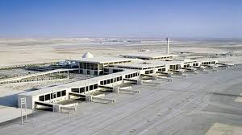
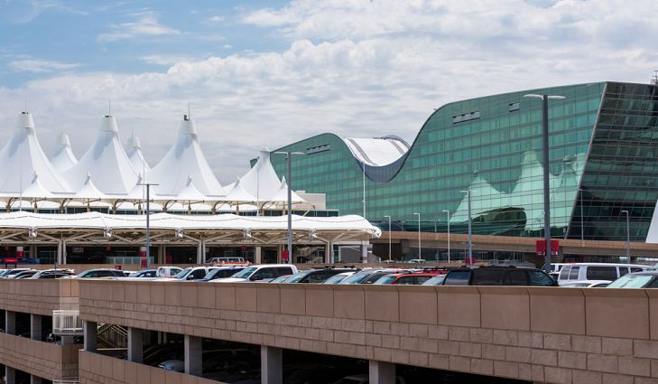
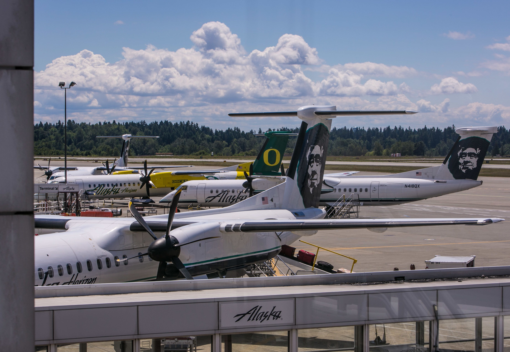

The Largest Airports In The World
HOME | BLOG
An airport plays a crucial role in air transport and provides facilities for planes to land and take off. An airport will always have a landing area, runway, or helipad, and adjacent utility buildings like terminals and hangars. There are small airports and big airports and there are massive airports in terms of area coverage. The Middle East has some of the world’s largest airports, and King Fahd International Airport in Saudi Arabia is by far the largest in the world. At almost 78,000 hectares, it is bigger than the adjacent country of Bahrain (76,000). The world's five largest airports are discussed below.
1. King Fahd International Airport - Dammam, Saudi Arabia (77,600 hectares)
King Fahd International Airport (KFIA) in Dammam, Saudi Arabia is the largest airport in the world covering an area of 78,000 hectares. The design of the airport began in 1976 and was created by Yamsaki & Associates architects together with Aerosystems International. The construction began in 1983 and was completed in 1999 when commercial operations began. The airport has a massive 6 story passenger terminal out of which three are for passenger processing, one for arrivals, one for departure, and one for boarding. The passenger terminal covers an area of 3,520,000 square feet and it is equipped with many customer counters, including 66 reserved for Saudi airlines and 44 for foreign airlines. The remainder of the counters are reserved for immigration and customs. The airport has a mosque built on the rooftop of the car park and has architectural designs that fuse modern style with old Islamic styles, and can accommodate 2,000 worshippers. The airport also has the royal terminal that is reserved for the royal family, senior government officials, and other foreign officials. The royal terminal covers an area of 177,000 square feet.
2. Denver International Airport - Denver, USA (13,571 hectares)
Denver International Airport (DIA) in Denver, Colorado is the world’s second largest airport by land area and the largest airport in the United States. It covers a total of 13,726 hectares. The airport has the longest public use runway in the US. DIA has the third largest domestic connection in the US and has non-stop connections throughout Europe, Asia, North America, and Latin America serving 187 destinations. The airport was voted the best in North America for six consecutive years from 2005 to 2010 and was also named the best-run airport in America by Time Magazine in 2002. The airport serves as the main hub for Frontier Airlines and fourth-largest hub for United Airlines.
3. Dallas/Fort Worth International Airport - Dallas, USA (6,963 hectares)
Dallas/Fort Worth International Airport (DFW) in Dallas, Texas is the world's third largest airport by land area, with a size of 7,800 hectares. Aside from holding this title, it is also known as one of the busiest airports in the world. DFW flies to over 200 destinations across the world. The most popular destination is Los Angeles, California, followed by Chicago, Illinois. The airport is home to five terminals in total.
4. Orlando International Airport - Orlando, USA (5,383 hectares)
Orlando International Airport (MCO) is the busiest airport in Florida as well as one of the busiest airports in the United States. It covers 5,383 hectares, making it the largest airport in the world. it primarily serves the Orlando area in Central Florida, which is a hugely popular tourist destination thanks to its massive theme parks. Over half of Florida's population can drive to Orlando International Airport in less than two hours.
5. Washington Dulles International Airport - Washington, D.C., USA (4,856 hectares)
Washington Dulles International Airport is an airport located in Virginia. The airport is 26 miles (42 km) west of downtown Washington, D.C., in Virginia's Loudoun and Fairfax counties. It is named for Secretary of State John Foster Dulles who served under President Eisenhower. The airport covers an area of 4,856 hectares and serves the area around Washington, D.C. The airport is home to 135 gates and flies to over 100 destinations.